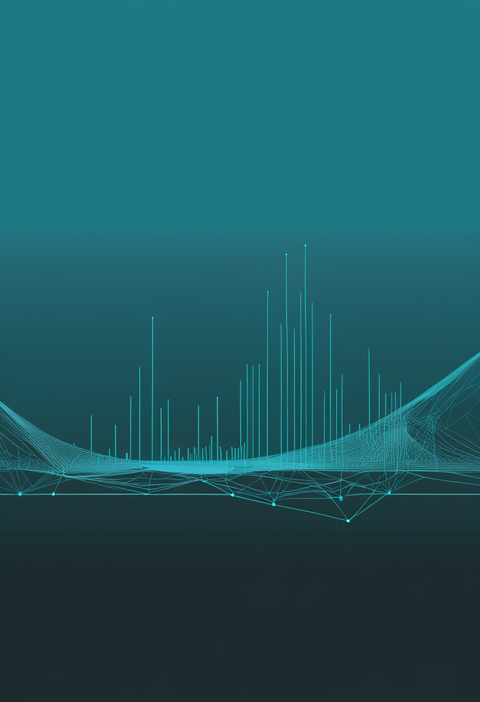
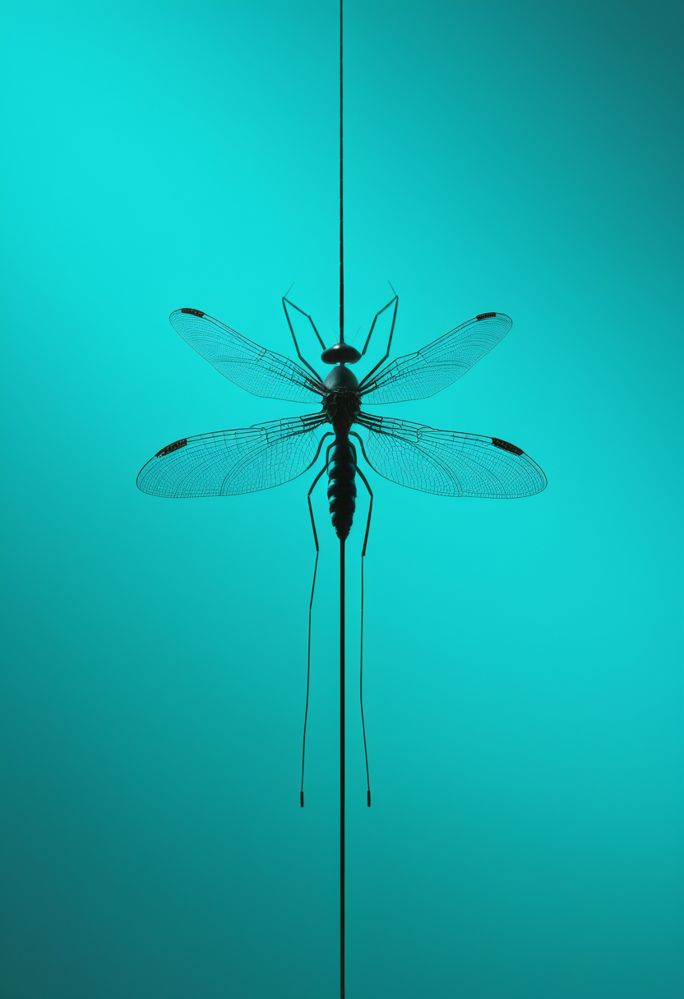
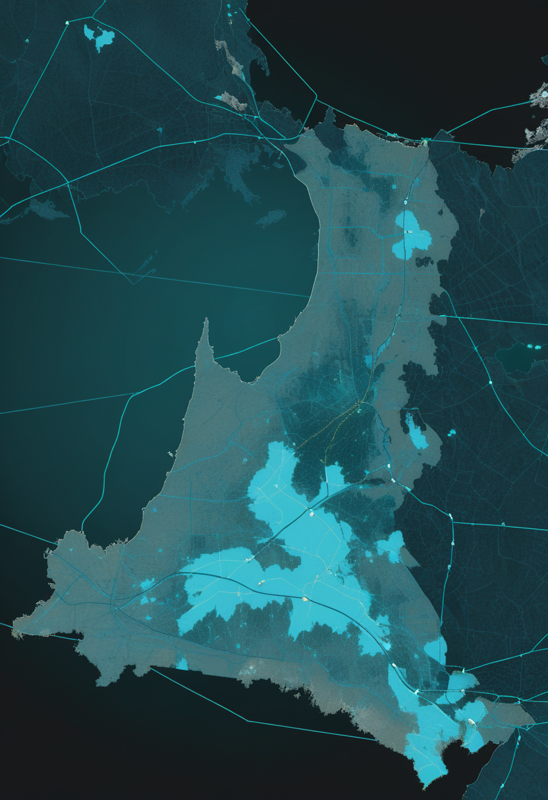
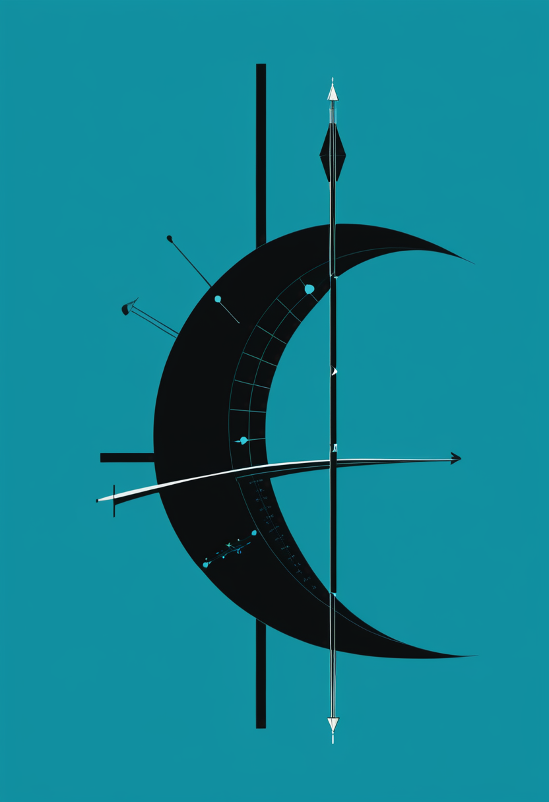

90年前の予言、Natureに載った ― マグネターが暴いた真空の複屈折
9/4号の続報 ― 強い磁場のもとでは真空そのものが光の進み方を変える『真空複屈折』に最も有力な観測証拠が得られたと9/4号で伝えたが、当時は同じIXPEデータを別モデルで解析した独立チームの慎重論があり『要確認』としていた。今回、その観測がNatureに正式掲載され、確定した。対象はマグネター1E 1547.0-5408(自転周期2.1秒、磁場は地球の1兆倍超)。X線偏光観測衛星IXPE、NICER、そしてパークス電波望遠鏡(Murriyang)による協調観測で、表面熱放射が支配的な2 keV帯において位相平均偏光度65%、特定の自転位相では約80%に達する高い偏光を検出した。詳細な大気放射輸送モデルを当てはめても、磁気圏の真空複屈折を考慮しない限りこの偏光の振る舞いは一貫して説明できないという。1936年にハイゼンベルクとオイラーが予言しながら、地上の実験室ではこれほど強い磁場を作れないために90年間検証できずにいた効果が、星を実験装置として借りることでようやく観測の射程に入った。

アピテグロマブ、PDUFAまで残り21日
Scholar Rockの筋標的薬アピテグロマブは、FDAのアクション日(PDUFA)である2026年9月30日まで、本日で残り21日となった。2025年9月の完全回答書(CRL)は、充填・仕上げ工程を担うCatalent Indianaの査察所見に起因するもので、有効性・安全性への懸念ではない。同社は当該施設を申請から外し、第2の充填・仕上げ施設のみで審査を進めており、その体制でFDAの審査が進行していることを8月7日に発表している。代替施設からの市販用バイアル供給体制は整っており、承認が下りればSMAで初の筋を標的とする治療として即座に米国で発売できる。
『早く始めた人ほど伸びる』 ― SAPPHIREの新解析
第3相SAPPHIRE試験の新しい解析がMDA 2026で示され、アピテグロマブによる運動機能の改善が、治療を早く開始した人ほど大きいことが判明した。9/3号で報じたHFMSE改善分布(3点以上改善30.4%対プラセボ12.5%)は治療効果の『大きさ』を示す数字だったが、今回の解析は『いつ始めるか』という時間軸を新たに加える。筋を標的とする上乗せ療法において投与開始の時期が効果量を左右するという実務的な示唆であり、承認後にどの段階の患者へ優先的に使うかという臨床判断に直接影響する。
サラネルセン、遺伝子治療を受けた乳児を対象とする新試験
Biogenの次世代アンチセンス薬サラネルセン(BIIB115)で、遺伝子治療後の乳児を対象とする新試験(NCT07444450)が動いている。9/4号で報じた第3相3試験構成のうちSTELLAR-1は治療歴のない発症前乳児が対象だったが、今回の試験はそれとは別の集団を扱う ― 発症前にオナセムノゲン・アベパルボベクによる遺伝子治療をすでに受けた、遺伝学的診断済みのSMA乳児に、投与6か月後からサラネルセンを追加した際の安全性・忍容性を評価する設計である。年1回投与を目指す薬剤が、遺伝子治療後に伸び悩む児をどこまで底上げできるかという問いに正面から答える枠組みになる。
SMAの論点は『効く薬があるか』から『どの順番で、いつ足すか』へ完全に移った。アピテグロマブは開始時期、サラネルセンは遺伝子治療の後という位置。どちらも単剤の勝負ではなく、既存治療の上に何をどう積むかの設計問題である。
Synchronの2026年ピボタルが『PMAの物差し』を決める
血管内留置型Stentrodeのピボタル試験を準備中のSynchronは、通過すれば埋め込み型BCIとして初の市販前承認(PMA)申請となる。前段のCOMMANDは恒久埋め込みBCIで初のFDA治験機器適用免除(IDE)試験であり、既存治療に反応しない重度両上肢麻痺6人が対象だった。2025年11月にDouble Point Ventures主導で2億ドルのシリーズDを完了している。今回新たに判明したのは、ピボタルの主要評価項目に機能的コミュニケーション課題と日常生活動作が入る見込みだという点である(報道ベース、要確認)。この設計がそのままPMAの評価基準を決めることになる ― どの機能を測るかを最初に決めた者が、業界全体の物差しを握る。
視線入力がカメラを離れる ― e-skin眼電図によるニューロモルフィック視線復号
ACS Nanoに、極薄でコンフォーマルなe-skinセンサと抵抗変化型メモリ(RRAM)をハード・ソフト協調設計で統合し、眼電図(EOG)からリアルタイムに視線を復号するイベント駆動型インターフェースが報告された。カメラ式アイトラッカーが苦手とする照明条件や装着姿勢の制約を外す方向であり、イベント駆動によってデータ量と消費電力を抑える。視線AACの入力系統がカメラ一択でなくなる可能性を示す報告である。
PMAという業界初の関門は、まだ試験が終わってもいないのに、何を測るかという設計の段階から結果を左右し始めている。一方で視線入力は、カメラという前提そのものを疑い始めた。速さを競うのが侵襲型なら、置き換えにくさを競うのが視線入力である。

エボラ、公式値は前号のまま ― 動いたのは保健省速報だけだった
DRCのブンディブギョ型エボラについて、WHO・ECDCが確認できる最新値は9月6日報告(9月5日までのデータ)の確定6,604例・死亡3,175人で、9/8号と同じ数値のまま更新されていない。致死率は約48.1%。一方でChimpReportsは、9月7日の保健省発表として確定6,686例・死亡3,226人、隔離819人と報じた ― 公式値との差分は+82例・+51人で、新規例の増分がほぼ横ばいのまま、死者の増分がそれに並んだ格好になる。ただしこの保健省値は単一報道であり、原文は本実行環境から確認できていない(要確認)。数字が動かないことを安心材料と読むのではなく、報告の遅れなのか鎮静化なのかを見極める必要がある局面である。

米国の西ナイル熱は22年ぶりの規模へ向かう
CDC ArboNETの9月1日時点データで、2026年の米国のヒト西ナイル熱は407例・40州に達した。8月11日時点では181例・29管轄・死亡11人で、約71%が神経侵襲型だったことを踏まえると、この3週間で報告数はおよそ倍以上に増えている。CDCの整理では今季は例年の約5倍の水準で推移し、過去最大だった2003年に近い軌道にある。西ナイル熱の流行の山は例年8月下旬から9月であり、最も重い数週はまだ来ていない可能性が高い。

ナイジェリアのラッサ熱、致死率24.4%に悪化
ナイジェリアCDC(NCDC)の状況報告によれば、ラッサ熱は流行第33週(8月10〜16日)までに確定1,035例・死亡252人、致死率24.4%に達した。2025年同期の854例・159人(致死率18.6%)から明確に悪化している。オンド33%・バウチ25%・タラバ13%・エド10%・ベヌエ6%の5州で全確定例の87%を占め、医療従事者54人が感染した。同じ国は世界のコレラの大半も背負い続けており、直近1か月(7月27日〜8月26日)の世界の新規42,717例のうち約96.7%がナイジェリアだった(国連・ECDC集計、既報の域内最大という位置づけに変わりはない)。致死率24.4%の希少熱と、致死率1%未満の大量発生を、同じ保健システムが同時に処理している。
エボラは『増えているか』より『誰が死んでいるか』の局面に入ったまま動かない。西ナイル熱は季節の山をまだ迎えていない。ラッサ熱は致死率24.4%という希少熱でありながら、コレラという大量発生と同じ保健システムに同居する。数字の大きさと重さは別物である。
90年待った予言が、Natureの中で確定した
本日の一本参照 ― マグネター1E 1547.0-5408のX線偏光観測から、真空複屈折の最有力証拠がNatureに正式掲載された。9/4号時点では独立チームが『決定的証拠とは言えない』と慎重論を示していたが、今回の掲載でその論点に一つの区切りがついた。IXPE・NICER・パークス電波望遠鏡の協調観測により、位相平均偏光度65%、特定位相で約80%という高い偏光が検出され、磁気圏の真空複屈折を考慮しない限り説明できない振る舞いであることが示された。
BepiColombo、8年9.9億kmの旅を終えて水星へ ― 輸送モジュール分離成功
ESAは9月3日15時49分(中央ヨーロッパ夏時間)、BepiColomboの水星輸送モジュール(MTM)が探査機本体から分離に成功したとの信号を確認した。打ち上げから8年、9.9億kmを航行し9回の惑星スイングバイを経てたどり着いた、水星到着シーケンスの第一段階である。MTMは小型車ほどの大きさで、15メートル級の太陽電池パネル2枚とキセノンイオン推進システムを備え、探査機全体を電力供給・推進してきた。この後、11月21日に水星周回軌道へ投入され、12月9〜10日にESA・JAXA双方の周回機(MPO・Mio)が分離する ― 水星に2機の探査機を同時投入する世界初のミッションが、最終段階に入った。
真空複屈折の確定は、地上で作れない条件を『星を実験装置として借りる』ことで越えた例だった。BepiColomboは逆に、8年かけて自ら現場まで出向いた。届かない場所へ届く方法は、待つことと、行くことの二通りしかない。
『心をモデル化するAI』の統治を、作る前に書く
デジタルツイン脳の議論はこのところ『どこまで測れるか』(9/3・9/7号)を主題にしてきたが、今号で目立つのは『作れたあと誰が持つか』を問う議論である。arXiv:2606.23094『Cognitive Digital Twins: Ethical Risks and Governance for AI Systems That Model the Mind』は、個人の認知を模した認知デジタルツイン(CDT)が抱える倫理リスクと、必要な統治枠組みを整理する。査読前の論考だが、モデルの精度が上がるほど本人の同意と所有の問題が先鋭化するという構図を明示している。

グリーフテックは『受容性』の実証研究段階に入った
2026年のFrontiers誌の複数の研究が、故人を模したグリーフボットの受容性を規定する要因を調べている。感情的開放性とデジタルリテラシーが強い正の予測因子、宗教性と倫理的懸念が負の予測因子として働くと報告された。一方で遷延性悲嘆症状、感情的過依存、同一性の混乱といったリスクが、とくに未処理の喪失を抱える脆弱な利用者において指摘されている。9/7号で報じた『産業として何を壊しうるか』という倫理論に対し、今回は『誰が受け入れやすく、誰にリスクが集中するか』という実証データが加わった。問いは『使えるか』から『誰に、どの時期に使ってよいか』へ移った。
認知デジタルツインは将来の本人、グリーフボットは故人 ― どちらも『本人の同意を取れない存在』を扱う技術である。技術の成熟より先に、同意の代理をどう設計するかが実務課題になっている。
水曜日の便り。9/4号で『最有力の証拠』としつつ要確認としていたマグネターの真空複屈折観測が、Natureに正式掲載され確定した ― 1936年の予言が90年を経て観測の射程に入った。命の章では、アピテグロマブがFDA判断まで残り21日となったことに加え、SAPPHIREの新解析で治療開始時期が効果量を左右すると判明したこと、遺伝子治療後の乳児を対象とするサラネルセンの新試験を伝えた。自由の章では、Synchronのピボタル試験の主要評価項目が業界の物差しを決めること、視線入力がカメラを離れe-skin眼電図で復号される技術を報じた。基盤の章では、DRCエボラの公式値が前号のまま据え置かれる一方で保健省速報のみが動いたこと、米国の西ナイル熱が22年ぶりの規模へ向かうこと、ナイジェリアのラッサ熱が致死率24.4%へ悪化したことを伝えた。畏敬の章では、マグネターの真空複屈折確定に加え、BepiColomboが8年9.9億kmの旅を終え水星への輸送モジュール分離に成功したことを紹介した。美の章では、『心をモデル化するAI』の統治を作る前に書こうとする議論と、グリーフテックが受容性の実証研究段階に入ったことという、二つの『人間のデジタル化』を取り上げた。
では、また明日の朝に。 — JaH